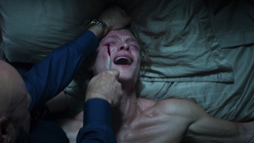
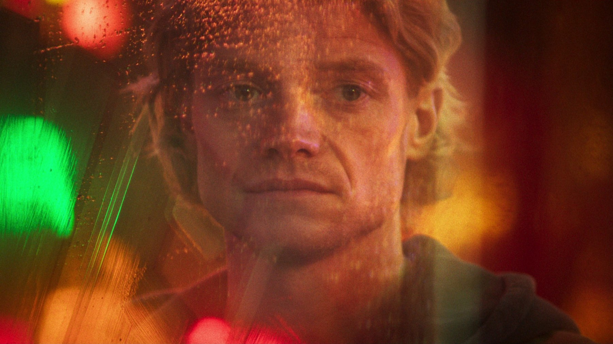
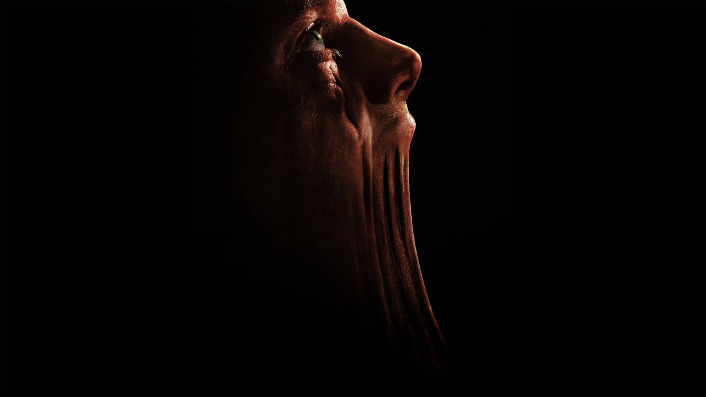

Clayface: recensione del body horror DC
Un supereroe DC girato come La mosca: il corpo che si scioglie funziona, il personaggio che lo abita molto meno
Chi si aspetta un cinecomic con le città che crollano può cambiare sala, perché Clayface è un film dell'orrore con la maschera da supereroe. La nostra tesi è semplice: funziona finché guarda il corpo di Matt Hagen che si scioglie, ma perde forza quando deve spiegarci perché ci importa di lui. La critica lo premia, ma l'unica recensione italiana che abbiamo letto per intero è molto più fredda, e più avanti vi diciamo da che parte stiamo.
Di cosa parla Clayface?
Matt Hagen vive a Gotham City ed è un attore già candidato all'Oscar. Una notte di festa lo mette sulla strada del boss Markos Szabo: il mattino dopo il suo volto è sfregiato da una lama, e quando un'attrice lo accusa in televisione la carriera crolla insieme al resto. Torna nel quartiere povero da cui veniva e bussa alla porta di una dottoressa, Caitlyn Corr, che sta mettendo a punto una cura rigenerativa. Da qui in avanti non diciamo altro, perché il film è più bello se non sapete dove vi porta, ma il punto di partenza è chiaro.
Il protagonista è Tom Rhys Harries, accanto a Naomi Ackie nei panni della dottoressa. L'idea di partenza è di Mike Flanagan, che voleva un film dell'orrore ma anche thriller e tragedia, però la sceneggiatura è stata poi riscritta da Hossein Amini. Le riprese si sono fatte a Liverpool e ai Warner Bros. Studios di Leavesden, e il budget contenuto per un film DC si capisce dal tipo di racconto, perché qui servono più trucco che grattacieli.
Tre momenti che dicono che film è
Il primo è lo sfregio. Il film non perde tempo a farci amare Matt: lo mostra a una festa, poi la mattina dopo gli toglie il volto, che per un attore è il lavoro intero. È la mossa più riuscita della prima parte, perché la perdita è concreta prima ancora che arrivi qualsiasi potere.
Il secondo è il primo cedimento della cura. Il trattamento sembra funzionare e restituisce a Matt il suo aspetto, ma durante un evento pubblico la faccia comincia a sciogliersi davanti a tutti. Qui si capisce il registro scelto da Watkins, perché la paura nasce dall'imbarazzo di un corpo che tradisce e non da un mostro che salta fuori dal buio.
Il terzo l'ha raccontato lo stesso regista. In una scena ambientata nel bagno di un aereo Matt usa un paio di forbici per tagliare la pelle che si scioglie intorno agli occhi, e secondo ComingSoon.net la sequenza è stata difficile da guardare anche per alcuni membri della troupe. Per noi è il punto in cui il film smette di fare il cinecomic, perché finalmente mantiene ciò che il titolo e il trailer promettevano.
Il fatto che cambia come lo guardi: La mosca
Watkins ha dichiarato di aver puntato su effetti pratici, e tra i suoi modelli c'è La mosca di Cronenberg per l'evoluzione fisica del protagonista; per le maschere e le bende che nascondono il volto di Matt guarda invece a L'uomo invisibile del 1933 e a La maschera di cera, e per le prime cicatrici a Frankenstein del 1931. Sapendolo, la trasformazione di Clayface si legge meglio, perché è una discesa a tappe come quella di Seth Brundle, con un corpo che cambia pezzo dopo pezzo, mentre nei film di supereroi di solito è uno scatto di forza.
Cosa ne dice la critica
Tutti i numeri in un posto solo. A ottobre 2026 Rotten Tomatoes assegna a Clayface il 75% su 155 recensioni, con il pubblico al 94%. Metacritic invece si ferma a 59 su 100 su 44 recensioni, un giudizio «contrastato», anche se il CinemaScore è A-. Il budget stimato è tra i 30 e i 44 milioni di dollari, e MYmovies gli dà due stelle su cinque. Le riprese sono andate dal 31 agosto al 1º novembre 2025. La sintesi di Rotten Tomatoes parla di un film con un'identità propria, che richiama i classici del body horror, impiega tempo a costruirsi e poi diventa un thriller di vendetta soddisfacente. La premiere mondiale è stata il 13 ottobre 2026 a Los Angeles, dieci giorni prima dell'uscita americana: le cifre possono ancora spostarsi.
Frank Scheck di The Hollywood Reporter lo chiama una scommessa che paga e loda l'interpretazione di Tom Rhys Harries, perché rende fisico ed emotivo il deterioramento del personaggio. Dall'altra parte Amy Nicholson del Los Angeles Times trova il ritmo lento e i personaggi deboli, quindi poca originalità, e a suo giudizio la sceneggiatura non sviluppa la complessità morale di Matt. In Italia Andrea Fornasiero di MYmovies gli dà due stelle su cinque e lo definisce un body horror dalle formule abusate, con una trasformazione tragica che arriva troppo tardi e una vendetta privata che manca dell'ironia dei film a cui somiglia.

Ci importa davvero di Matt Hagen?
Le due fazioni, in fondo, litigano sulla stessa cosa. A Scheck basta il corpo che soffre. Nicholson e Fornasiero invece vogliono sentire cosa Matt ha perso, perché vederlo non gli basta. Per noi hanno ragione loro su un punto preciso, perché il racconto affida la caduta di Matt a una calunnia in televisione e a un boss che fa da cattivo, ingredienti già visti. Il rischio è quindi che la vendetta del terzo atto diventi un compito da svolgere, mentre dovrebbe essere una ferita da sentire. Il pubblico, però, sembra perdonare questo difetto quando il mostro funziona. Sugli effetti non abbiamo un parere nostro da offrire, perché le recensioni che abbiamo letto parlano di interpretazione più che di resa tecnica, ma i riferimenti dichiarati dal regista fanno ben sperare.

Vale la pena vederlo al cinema?
Se cercate un film per la settimana di Halloween, con un mostro in primo piano, un po' di sangue e niente universo da recuperare, vi consigliamo di andare, soprattutto se amate La mosca e il cinema di Cronenberg. Se invece vi aspettate un cinecomic spettacolare o un dramma psicologico di spessore, tenete conto delle riserve di Nicholson e Fornasiero. Inoltre, se non reggete le immagini forti o pensate di andarci con ragazzi più piccoli controllate prima la classificazione ufficiale. Il film dura 108 minuti ed è distribuito da Warner Bros Italia.
Clayface sa far soffrire un corpo che si scioglie, ma non ci convince a soffrire con l'uomo che lo abita.
Domande frequenti
Quando è uscito Clayface in Italia?
Nelle sale italiane dal 22 ottobre 2026, con Warner Bros Italia come distributore. Negli Stati Uniti l'uscita è il 23 ottobre.
Di cosa parla Clayface?
Matt Hagen, attore nominato all'Oscar, perde il volto e con quello la carriera. Una dottoressa gli offre un trattamento sperimentale che gli dà il potere di cambiare forma, ma il prezzo è una discesa nella mostruosità.
Che voto ha Clayface per la critica?
A ottobre 2026 Rotten Tomatoes dà il 75% su 155 recensioni e Metacritic 59 su 100 su 44 recensioni; il CinemaScore è A-. MYmovies assegna 2 stelle su 5.
Quanto dura Clayface?
108 minuti, secondo MYmovies. La scheda di TMDB indica 109.